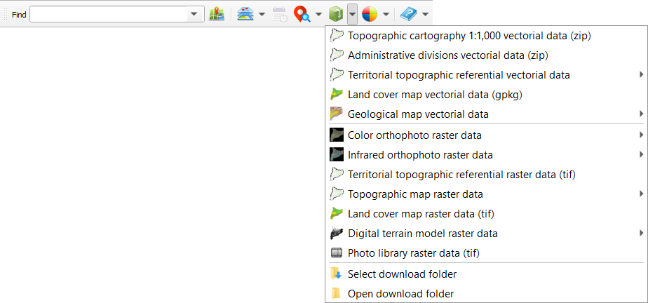

QGIS Plugin for accessing open data published by the ICGC (Institut Cartogràfic de Catalunya, Catalan Mapping Agency).
It provides geocoding searches for place names, streets, roads, coordinates in different reference systems:
loading of base data layers:

time series management:
downloading of vectorial o raster information by area, municipality or county (depending on the product):

basic style control:
and show help:

More data and services will be added in the near future.
This plugin uses suds-py3, wsse libraries and spanish land registry geo services